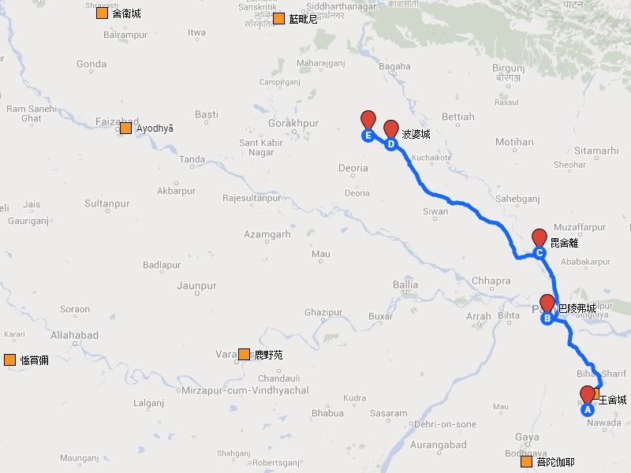
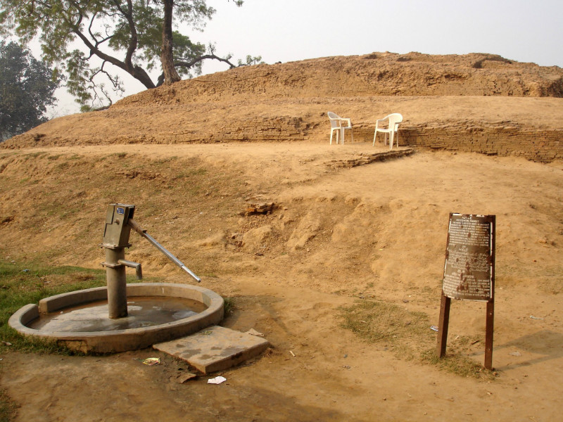

佛垂涅槃遊行記略
據長阿含遊行經，佛臨涅槃前歷經三國，由摩揭陀王舍城始，先至跋祇，再至末羅，於拘尸那竭入滅。
詳細說來，沿途路過的地點有，摩揭陀的竹園、巴陵弗城，跋祇的拘利村、那陀村、毗舍離國、竹林叢、遮婆羅塔、香塔、菴婆羅村、瞻婆村、揵荼村、波梨娑村、負彌城北尸舍婆林，末羅的波婆城、拘尸那竭。
今於地圖內大略擬出王舍城至拘尸那竭之行程（約 300 公里）。

茲並摘錄佛陀最後之事蹟，羅列於下。
1. 羅閱城耆闍崛山
- 為大臣禹舍說跋祇七增盛事
- 召集諸比丘，說比丘七不退法
2. 路由摩揭，至竹園
- 為諸比丘說五分法身
3. 路由摩揭，至巴陵弗城
- 諸清信士歸依，為起大堂舍、平治處所，說犯戒五衰、持戒五德
- 為阿難說此城禹舍所造以防禦跋祇，此城最勝
- 諸清信士、禹舍設供，為說此處賢善，乃出城門，以神力渡河
4. 跋祇，至拘利村
- 為諸比丘說四深法（戒、定、慧、解脫）
5. 路由跋祇，至那陀村
- 為阿難說法鏡（聖弟子得不壞信）
6. 止揵椎處
- 為阿難說信佛法僧、信戒得定
7. 路由跋祇，至毗舍離
- 為菴婆婆利漸為說法，示教利喜，乃歸依，佛詣彼園止宿
- 五百離車以偈贊佛，以衣施佛，佛告以五者難得
- 為菴婆婆利說四諦，乃遠離塵垢，諸法法眼生，見法得法，決定正住，不墮惡道，成就無畏
8. 路由跋祇，至竹林叢
- 毗沙陀耶設供
- 召集諸比丘，乃遣散大眾，獨與阿難安居，「佛身生疾，舉體皆痛」
- 為阿難說「我所說法，內外已訖，當自歸依，歸依於法，勿他歸依」，即修習四念住
9. 遮婆羅塔
- 為阿難說修習四神足者可住世一劫有餘，阿難未請佛住世
- 魔波旬來，佛說「止止，波旬！佛自知時，不久住也，是後三月，於本生處拘尸那竭娑羅園雙樹間當取滅度」
- 入定意三昧，捨命住壽，地大震動，佛放大光
- 為阿難說地動八因、八眾，如來能知受、想、觀起住滅
10. 香塔
- 召集諸比丘，「如來不久，是後三月當般涅槃」
11. 路由跋祇，至菴婆羅村
- 為大眾說戒、定、慧、解脫
12. 瞻婆村、揵荼村、波梨娑村
13. 路由跋祇，至負彌城北，止尸舍婆林
- 為諸比丘說四大教法
14. 路由末羅，至波婆城闍頭園
- 周那設供，「別煮栴檀樹耳，世所珍奇」，佛說世有四沙門，一行道殊勝、二善說道義、三依道生活、四為道作穢
- 為阿難說周那功德
15. 向拘尸那竭途中
- 遇福貴，佛說如來專精，不聞雷聲，福貴得法眼淨，施二黃金㲲
- 為阿難說如來光色殊常
16. 拘孫河
- 飲拘孫河水、澡浴
- 周那先佛滅度
- 阿難問佛葬法，為說四種人應起塔廟
- 遇梵志，佛及阿難辭其三請
17. 娑羅園雙樹間
- 為阿難說以非時花不名供養，能受法、行法者名供養如來
- 阿難却梵摩那比丘，佛說其功德
- 阿難勸佛於他處入滅，佛說此城因緣
- 召集五百末羅，供養五百張㲲
- 為須跋說無八正道則無四沙門果，須跋出家受具，先佛入滅，是最後弟子
- 說阿難功德、說四聖地
- 告阿難聽諸釋種及異學梵志出家、勿試四月，對闡弩比丘行梵罰，對女人輩勿見、勿語、斂心
- 告阿難所說經戒即是汝護、是汝所持，捨小小戒，上下相呼當順禮度
- 三問諸比丘，於佛法僧及道有疑否
- 出金色臂，說最後之教誡，入般涅槃
18. 阿那律尊者
- 召諸末羅，停舍利於園中七日，入城東門，出北門，渡尼連禪河，至天冠寺，闍維不果
19. 大迦葉尊者
- 跋難陀言「我等自在」
- 見世尊足有異色
- 作頌，乃闍維之
20. 香姓婆羅門
- 先奉上牙與阿闍世王，再八分舍利，其第九瓶塔（香姓），第十炭塔（畢鉢村人），十一生時髮塔
21. 說出生、出家、成道、涅槃皆於二月八日沸星
附世尊最後之教誡：
Atha kho Bhagavā bhikkhū āmantesi, handa dāni, bhikkhave, āmantayāmi vo, vayadhammā saṅkhārā, appamādena sampādethā ti, ayaṃ Tathāgatassa pacchimā vācā.
爾時世尊告諸比丘：「噫！諸比丘！今者我當告汝等——諸行是壞滅法，汝等應以不放逸而成就。此係如來之最後言說。」

圖為於波婆城周那住處所建的窣堵坡，佛陀於此受最後之供養。（圖片來源：維基百科）